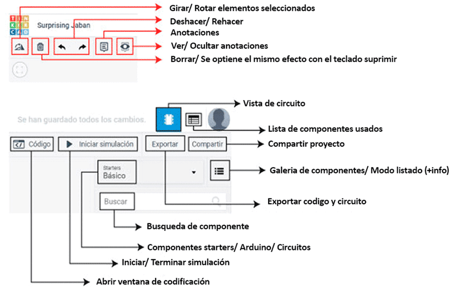
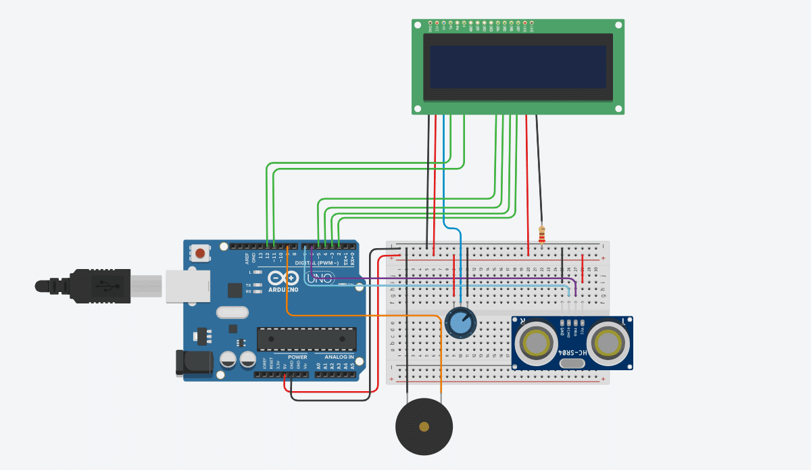

Como producir un objeto u producto de la forma más optimizada y que a sus vez genera una imagen limpia y cautivadora para el publico.
Hoy les enseñare a usar el programa Tinkercad circuitos para lograr un circucito con arduino incluyendo el codigo.
• Detalles -> Tinkercad es una herramienta online ofrecida por Autodesk. De entre sus utilidades probablemente la más conocida es la de diseñar piezas en 3D pero también cuenta con la posibilidad de montar, programar y simular circuitos con Arduino.
• Historia -> Esta disponible desde 2011, se ha convertido en una plataforma popular para crear modelos para impresión 3D.
• Instalación -> Se utiliza de forma gratuita y sólo requiere crearse una cuenta de usuario. Se puede usar también de forma online.
• Cualidades -> cuenta con una amplia biblioteca de componentes y placas de Arduino. Permite simular el funcionamiento de los circuitos creados e incluso exportar o importar el Código de dicha construcción.


#include <LiquidCrystal.h>
#define minimo 2
#define maximo 326
#define frec_min 400
#define frec_max 550
const int pinecho = 7; //definimos los pines a los que se conectaran
const int pintrigger = 6;
const int pinled = 13;
const int buzzer = 9;
// PANTALLA LCD 16X2
// AQUI SE CONFIGURAN LOS PINES PARA LA COMUNICACION CON LA PANTALLA
LiquidCrystal lcd(12, 11, 5, 4, 3, 2);
// VARIABLES PARA CALCULOS
unsigned int tiempo, distancia;
void setup() {
// PREPARAR LA COMUNICACION SERIAL
Serial.begin(9600);
// INDICAMOS QUE TENEMOS CONECTADA UNA PANTALLA DE 16X2
lcd.begin(16, 2);
// MOVER EL CURSOR A LA PRIMERA POSICION DE LA PANTALLA (0, 0)
lcd.home();
// CONFIGURAR PINES DE ENTRADA Y SALIDA
pinMode(pinecho, INPUT);
pinMode(pintrigger, OUTPUT);
pinMode(13, OUTPUT);
}
void loop() {
// ENVIAR PULSO DE DISPARO EN EL PIN "TRIGGER"
digitalWrite(pintrigger, LOW);
delayMicroseconds(2);
digitalWrite(pintrigger, HIGH);
// EL PULSO DURA AL MENOS 10 uS EN ESTADO ALTO
delayMicroseconds(10);
digitalWrite(pintrigger, LOW);
// MEDIR EL TIEMPO EN ESTADO ALTO DEL PIN "ECHO" EL PULSO ES PROPORCIONAL A LA DISTANCIA MEDIDA
tiempo = pulseIn(pinecho, HIGH);
// LA VELOCIDAD DEL SONIDO ES DE 340 M/S O 29 MICROSEGUNDOS POR CENTIMETRO
// DIVIDIMOS EL TIEMPO DEL PULSO ENTRE 58, TIEMPO QUE TARDA RECORRER IDA Y VUELTA UN CENTIMETRO LA ONDA SONORA
distancia = tiempo / 58;
Serial.print(distancia);
float a = map(distancia, minimo, maximo, frec_min, frec_max);
tone(buzzer,a);
Serial.println(" cm");
//Serial.println(a);
delay(200);
LCDNote(distancia);
}
void LCDNote(int dist)
{
lcd.clear();
if ( 2 <= distancia && distancia <=48 )
{
lcd.print("DO");
}
if ( 49 <= distancia && distancia <= 95)
{
lcd.print("RE");
}
if ( 96 <= distancia && distancia <= 142)
{
lcd.print("MI");
}
if ( 143 <= distancia && distancia <= 189)
{
lcd.print("FA");
}
if ( 190 <= distancia && distancia <= 236)
{
lcd.print("SOL");
}
if ( 237 <= distancia && distancia <= 283)
{
lcd.print("LA");
}
if ( 284 <= distancia && distancia <= 326)
{
lcd.print("SI");
}
}
Codigo arduino - Descargar archivo
Circuito Theremin - Clonar circuito en tinkercad